滤波天线
一种高选择性L型探针滤波天线


Abstrat
本文提出了一种共面L探头缝隙加载宽带滤波微带天线。通过引入四个缝隙和一个共面的L探头实现了滤波特性。激发一个标准的TM20模，以在较低的波段达到辐射零点。此外，一个标准的TM21模和L探测器对上波段的两个辐射零点有贡献。这些缝隙还会激发新的谐振模式，以提高天线的带宽。分析表明，传统的TM01模式和重塑的TM21模式被激发并相互耦合，实现了较宽的带宽。测试结果表明，该天线在2.32~2.63 GHz范围内具有14%的10dB阻抗带宽，在2.48 GHz处的峰值增益为9.24dBI。在通带范围内，增益变化小于1d B。该天线具有结构简单、共面、易于制作等优点，适用于各种无线通信系统。
仿真与理解


谐振特性：仅存在单一谐振点，对应矩形微带贴片的本征基模TM01，工作带宽极窄，无滤波特性、无辐射零点。
模式来历：矩形微带贴片的天然本征谐振，电场沿 y 方向呈现半波长分布、x 方向无场变化，边射方向（+z）产生有效辐射，是微带贴片天线的基础工作模式。
该天线是从矩形微带贴片天线蚂蚁开始的。通过文献启发，沿着辐射的边缘切割了四个槽，称为蚂蚁。

核心变化：沿贴片辐射边蚀刻 4 个槽，截断了表面电流路径，改变了贴片边界条件与电流 / 电场分布，实现模式重构与辐射零点激发，是宽带与滤波特性的核心基础。
| 模式类型 | 对应频点 | 模式特征与激发来历 |
|---|---|---|
| 基模TM01 | 通带低频段 | 开槽未破坏基模本征谐振，依然是天线核心辐射模式，对应通带内的基础谐振点 |
| 标准TM20模式 | 2.25GHz | 4 个开槽的电流扰动激发，电场沿 x 方向 2 个半波长周期变化、y 方向无明显场变化，边射方向形成辐射零点，无有效辐射 |
| 标准TM21模式 | 2.76GHz | 开槽的电流路径重构激发，电场沿 x 方向 2 个半波长、y 方向半波长分布，本征边射辐射相互抵消，形成辐射零点 |
| 重塑TM21模式 | 通带高频段 | 开槽改变了TM21模式的电流相位与幅度分布，重构了其辐射方向图，消除了原本的边射零点，使其具备边射辐射能力；该模式与TM01基模耦合，激发新谐振频点，实现带宽初步拓展 |

切开了四个槽之后，激发了一个TM20模式和一个TM21标准模式。可以看但左右两边各添加了一个辐射零点，在2.25 GHz，电流分布表
明，表面电流沿贴片和缝隙的边缘反向流动。因此，在2.25 GHz处获得了最低的辐射效率和零边增益。

此外，电场也如图3所示。可以观察到电场沿x方向随一个波长变化。然而，它在y方向上几乎没有变化。上述结果表明，在这种情况下，在宽边有辐射零点的TM20模被激发。因此，2.25 GHz处的辐射零点也可以用TM20模的激发来解释。另一方面，在2.76 GHz处，中心部分的电流与外部部分的电流存在反相，在优化表面电流的幅度后，导致辐射零点。此外，电场在x方向和y方向上分别变化了一个波长和半个波长。上述结果意味着在这种情况下实现了在宽侧具有辐射零点的TM21模式。因此，2.76 GHz处的辐射零点也可以用标准TM21模的激发来解释。

核心变化：采用共面长 L 型探针替代传统馈电结构，无开槽设计，核心作用是优化阻抗匹配、引入高频辐射零点。
模式与谐振特性：
- 核心工作模式仍为TM01基模，L 型探针的容性耦合抵消了贴片的感性电抗，大幅改善了基模的阻抗匹配，拓展了基模的匹配带宽。
- 激发了 3.41GHz 处的专属谐振特性：由 L 型探针自身开路枝节的谐振、以及探针与贴片之间的容性耦合共同产生，该频点形成辐射零点，同时优化了天线高频阻带的反射系数。


核心变化：融合 Ant.B 的开槽结构与 Ant.C 的 L 型探针馈电，完整继承了两者的模式特性。
模式与谐振特性：
- 同时激发TM01基模、重塑的TM21辐射模式，两个模式耦合形成双谐振特性，初步实现宽带工作。
- 完整继承了三个辐射零点对应的模式：TM20模式（2.26GHz）、标准TM21模式（2.74GHz）、L 型探针引入的谐振模式（3.38GHz）。
核心缺陷：高频段 2.67GHz 处出现严重阻抗失配，输入阻抗达 351Ω，与 50Ω 馈线不匹配，压缩了天线有效工作带宽。


核心变化：在 Ant.D 基础上，于贴片中心蚀刻沿 x 轴的整形槽，解决高频阻抗失配问题，最终实现宽带、高选择性滤波辐射。
有效工作模式与对应谐振点（均为边射辐射模式，构成天线通带）：
TM01基模：对应 2.32GHz、2.49GHz 两个谐振点。
2.32GHz 处，表面电流沿 y 方向半波长变化，电场在贴片边缘形成两个反相峰值、中心为零点，是典型TM01模式；
2.49GHz 处电流与电场分布与 2.32GHz 高度一致，仍工作于TM01模式，构成基模的宽带谐振特性。
2.重塑的TM21模式：对应 2.62GHz 谐振点。
贴片中心电流沿 + y 方向，外侧电流沿 - y 方向，两者相位差 140°，矢量和不为零，可形成有效边射辐射；
电场沿 y 方向半波长、x 方向 1 个波长分布，符合TM21模式特征。开槽重构了该模式的电流分布，消除了其原本的边射零点，使其具备边射辐射能力。
三个辐射零点的产生机理
- 低频辐射零点（2.23GHz，通带下边缘）
核心来源：4 个辐射边开槽激发的 **TM20高阶模式 **。
贴片辐射边的 4 个槽截断了表面电流路径，使贴片表面形成沿 x 方向反向的两对电流回路，激发了TM20高阶模式。
该模式下，表面电流沿贴片边缘与槽边形成反相分布，反向电流的辐射场在边射方向（+z）相互抵消，辐射效率急剧下降，最终形成边射增益零点。
2.高频近带辐射零点（2.73GHz，通带上边缘）
核心来源：4 个辐射边开槽激发的标准TM21高阶模式。
4 个开槽的电流扰动激发了贴片的标准TM21模式，该模式电场沿 x 方向 1 个波长、y 方向半波长分布。
该模式下，贴片中心区域的表面电流与外侧区域的表面电流形成反相，经优化后两者电流幅度接近，反向电流的辐射场在边射方向几乎完全抵消，从而形成辐射零点。
该零点紧邻通带上边缘，实现了通带高频端的第一重高选择性抑制，构成了通带陡峭的上滚降特性。
3.高频远带辐射零点（3.34GHz，高频阻带）
核心来源：共面 L 型探针自身的谐振特性，以及探针与贴片之间的容性耦合。
共面 L 型探针的开路枝节形成了独立的谐振路径，在 3.34GHz 处产生自身谐振；同时，L 型探针与贴片之间的强容性耦合，在该频点使馈入能量无法有效耦合至贴片辐射体，大部分能量被反射。
该频点下，贴片上无法形成有效的同相辐射电流，馈入能量无法转化为边射方向的辐射场，最终形成辐射零点。
该零点进一步提升了高频段的带外抑制能力，同时 L 型探针的特性同步优化了高频阻带的反射系数，实现了更宽的阻带抑制效果。
滤波天线的基本参数
滤波器的基本参数
滤波器的基本参数是衡量其性能和适用范围的重要指标，包括频率响应、带宽 特性、阻抗匹配、损耗性能等多个方面
带宽
设计滤波器首先要明确工作频带，即确定哪些频率成分可以被滤波器有效地 传输。该频带范围可通过绝对带宽和相对带宽两个参数来定义。若通带下截止频率 为fL，上截止频率为fH，则绝对带宽可以表示为：Δf = fH− fL。
而相对带宽（Fractional Bandwidth, FBW）则表示该通带在中心频率下所占的比例， 是归一化后的无量纲量，其计算公式为：FBW=(fh-fl)/f0。中心频率fo=（fh+fl）/2
插入损耗
在滤波器中，插入损耗反映的是信号源输入功率与负载端输出功率的比值。插 入损耗的单位为dB，理想情况下为 0 dB，表示无能量损耗。即为S21
回波损耗
在滤波器中，回波损耗是评估端口阻抗匹配程度的重要指标，它表示输入信号 中因阻抗不匹配而被反射回源端的能量比例。即为S11
带外抑制
在滤波器设计中，带外抑制是衡量滤波器对非工作频段信号抑制能力的重要 指标。它描述了滤波器在通带之外的频率范围内对信号的衰减程度
矩形系数
矩形系数（Shape Factor，SF）是滤波器通带与阻带过渡特性的定量指标，描 述滤波器k dB带宽与3 dB带宽的比值，反映滤波器频谱选择性能的好坏。
天线的基本参数
作为电磁波发送与接收的关键器件，天线的工作特性直接影响着整个通信系 统的性能表现。
输入阻抗
天线的输入阻抗表示天线馈线的负载阻抗，用Zin表示包括实部输入电阻Rin 和虚部输入电抗Xin。
驻波比
驻波比（VSWR）是衡量天线与馈电系统之间阻抗匹配程度的重要参数。当天 线输入阻抗与馈线的特征阻抗不一致时，会在馈线上产生反射波，前向波与反射波 叠加形成驻波现象。
方向图
天线的辐射强度随空间位置而变化，因此其方向图通常以天线为圆心，在远场 区域采用球坐标系下的角度参数θ和φ来描述电磁场强度随方向的分布情况。为 了全面展现天线的三维辐射特性，通常选取通过最大辐射方向并相互垂直的两个 典型切面，即E面和H面，分别绘制其二维方向图，从而反映天线在主辐射平面 内的能量分布特征。
方向性系数、辐射效率及增益
天线的方向性、辐射效率和增益是评价天线性能的关键指标，它们分别从不同 角度反映了天线对能量的辐射能力和方向特性，三者之间具有明确的数学关系。
方向性系数（Directivity, D）是衡量天线将功率集中辐射到某一特定方向的能 力。
天线的辐射效率（Efficiency，η）用于衡量天线输入功率中真正用于辐射的比 例
天线增益（Gain，G）用于表征天线向自由空间辐射电磁能量的强弱。作为一 种无源器件，天线并无放大功能，其增益是相对于各向同性天线而言的，体现的是 天线对电磁波的汇聚能力。
极化
极化(Polarization)是描述天线辐射或接收电磁波中电场矢量随时间变化轨迹 的重要特性。是描述电磁波电场矢量随时间在空间中变化轨迹的重要物理特性，是 天线参数中不可忽视的一部分。天线在辐射或接收电磁波时，其极化状态反映了电 场在远场某一点的振动方向。
线极化是指电场矢量沿固定方向振荡，其轨迹为一条直线，常用于地面通 信和雷达系统；
滤波天线类别整合
宽带带通滤波天线
5G毫米波应用的宽带高增益滤波天线
摘要
提出了一种适用于5G应用的宽带高增益毫米波(mm-wave)滤波 天线。该天线主要由一个带矩形槽的基片集成波导(SIW)腔、四个带金属 通孔的相同矩形贴片和一个寄生带组成。由于狭缝的摄动，SIW腔能够 在通带产生两个共振模式，同时在下带产生一个辐射零。通过加载的贴 片可以产生额外的谐振模式，以增加工作带宽，进一步增强天线的带内 增益。此外，寄生带可以在通带中提供第四共振，同时，由于其与矩形 贴片的相互作用，在上带处产生另一个辐射零。因此，实现了准椭圆带 通滤波响应，同时增强了阻抗带宽和轴视增益。
工作原理
在[28]中已经表明，在矩形SIW腔的短壁处刻蚀约四分之一 波长的狭缝可以在工作带旁产生辐射零。SIW背腔槽天线的工作带宽和增益是非常 有限的。而且在上阻带没有滤波响应，不是一个完整的带通滤波天线。图2显示了从基本SIW背腔缝隙天线到最终提出的滤波天线的演变过程。
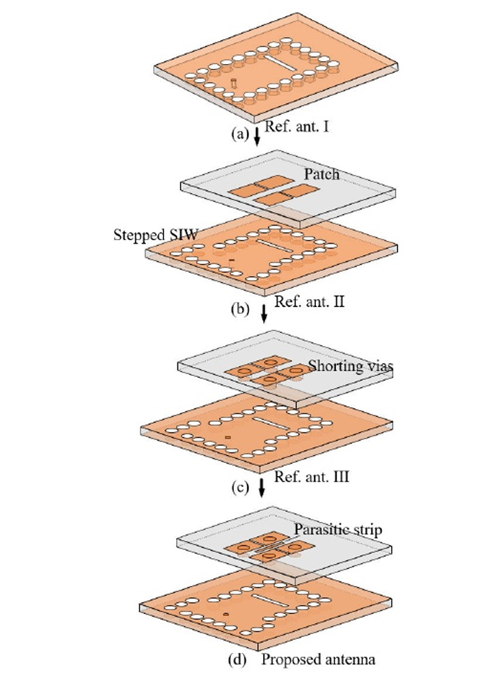
参考天线I在20-34 GHz频率范 围内，存在23.6和28.0 GHz激发的两种谐振模式。此外，在22.1 GHz处产生理想的辐射零值。
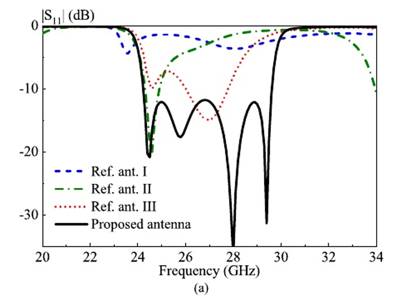
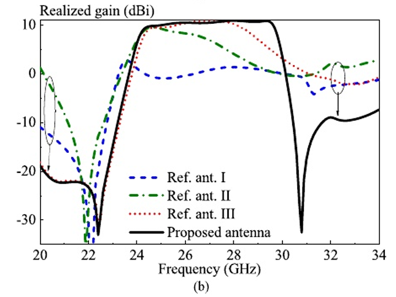
辐射频率和非辐射频率下的e场和 电流分布如图4所示。
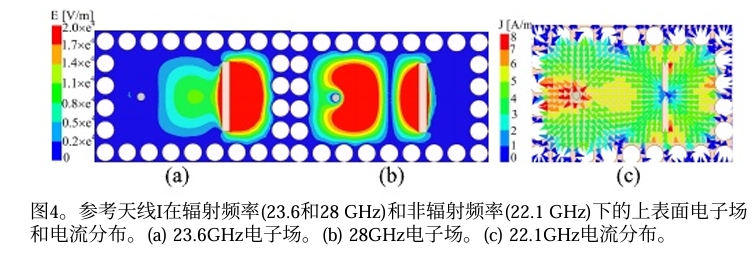
结果表明，23.6 ghz的谐振是由右侧部分 SIW腔的一半TE110模式引起的，而28.0 ghz的谐振是由左侧部分 SIW腔的TE210模式的扰动引起的，这是由槽的分离形成的。另 一方面，在22.1 GHz时，槽位处的电流相当弱，因此，很少有能量可以辐射出去，导致那里的辐射水平 非常低。原本的 TE210 模谐振频率更高，论文里通过偏移的耦合槽扰动了腔体内的场分布，把这个模式的谐振频率拉到了通带内，和 TE110 模相邻，拓展了带宽。天线二所示的凸字形siw腔体和辐射缝隙。
为了提高基本SIW腔背槽天线的增益，在参考文献中引入了 四个矩形贴片，第二个模型：
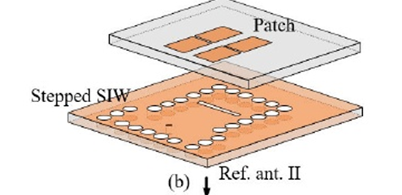
位于矩形槽的正上方，形成两层SIW孔耦合贴片天线。此外，将原来的矩形SIW腔体稍微修改为阶梯腔体。这主要是 为了提供额外的自由度来调整阻抗匹配。由于贴片的加载作用，SIW腔的两种谐振模式的谐振频率 变化不大，且趋于接近。此外，24.6 GHz谐振频率下的增益大 幅增加至9.7 dBi, 26.5 GHz谐振频率下的增益也达到7 dBi，尽 管阻抗匹配较差，|S11|高达- 3.5 dB。但是，贴片模式并没有 被耦合槽有效激发，工作带宽仍然很窄。
为了克服上述限制，在参考天线III上增加了四个短通孔， 将四个矩形贴片连接到SIW腔的上壁。在这种情况下，由于 SIW宽壁上的电流相当强，相当大的电流将流向金属通孔，因 此，贴片将能够有效地激发。如图3的红色线所示，在27 GHz 下确实激发了一种新的谐振模式，即贴片的TM01模式(该模式 与SIW腔的26.5 GHz谐振模式混合)，从而提高了带宽。
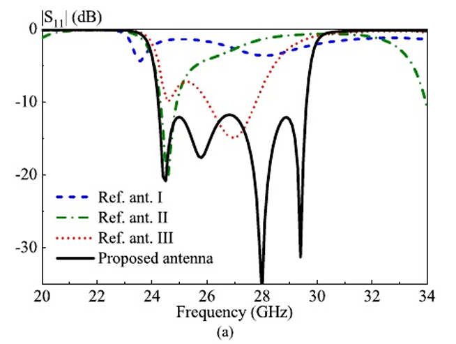
而且， 由于引入了金属通孔，下阻带中不需要的共振被移到了更低 的频率，因此，带外抑制水平得到了显著提高。
然而，上阻 带仍然没有表现出明显的滤波功能。
为了实现带通滤波响应，在提出的天线中，在补丁之间进 一步增加了x方向的寄生条。
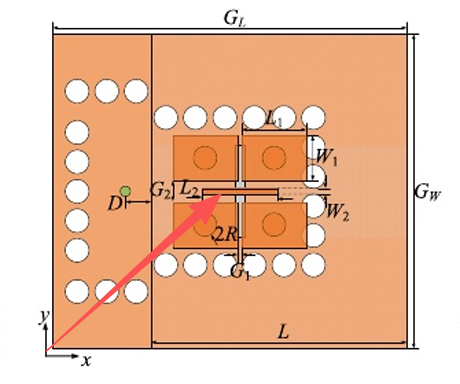
从图3的黑色实线可以看出，寄生条在29.4 GHz频率下被激发了一个额外的谐振模式，
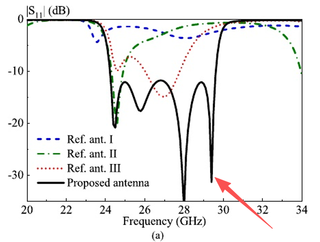
因此，通带中总共有四个共振(24.5,25.8,28.0和29.4 GHz)，从 而获得19.9% (24.20-29.60 GHz)的增强带宽。图5显示了在这 四个共振频率下，短贴片和寄生带上的电流分布。
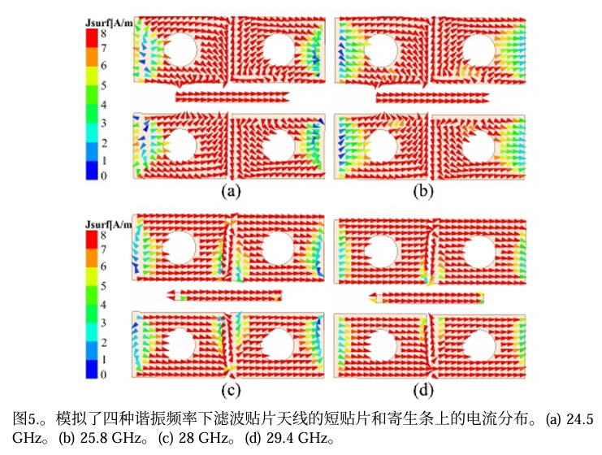
可以观察 到，尽管如上所述谐振是由不同的元件引起的，但四个频率 下的电流分布非常相似。这是因为四种模式的谐振频率彼此 接近，即使在SIW腔和寄生条的谐振频率下，四个矩形贴片上 也总是产生强电流。在这四个共振下，辐 射性能保持稳定，在通带内实现了约10.4 dBi的近乎平坦的增 益。此外，在30.7 GHz处产生了理想的辐射零(该辐射零的产 生机制将在第II-C节中解释)，正好在通带的上带处，显著提 高了那里的选择性。
辐射零值分析
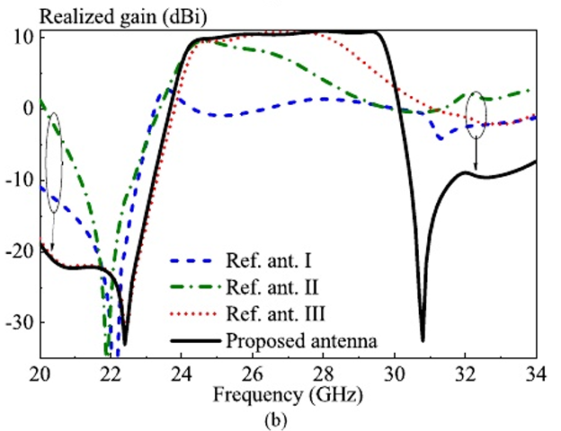
如图所示，在通带的低频段(22.4 GHz)和高频段(30.8 GHz) 处获得两个辐射零点，成功地将滤波功能集成到所提出的SIW 孔径耦合贴片天线中。在22.4和30.8 GHz两个辐射零频率下， 所提滤波天线的短贴片和寄生带上的模拟电流分布如图6所示。
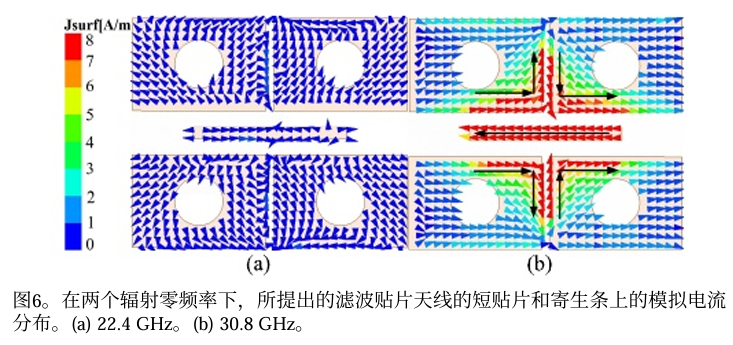
从图6(a)可以看出，在22.4 GHz时，贴片和条带上的电流都很 弱，说明它们没有得到有效的激励。这是合理的，因为如上 所述，较低的辐射零值基本上是由SIW腔背槽结构引起的。由 于几乎没有任何能量从SIW腔辐射出来，因此几乎没有能量将 耦合到贴片和条带上。在30.8GHz的辐射零点，其机制是完全 不同的。如图6(b)所示，寄生带上感应到相当强的电流，并且矩形贴片上的电流要弱得多。但是，当四个贴片一起考虑时， 总电流强度与寄生条上的电流强度相当。值得注意的是，四 个贴片上的x向电流与寄生条上的x向电流方向相反。此外， 左侧两个贴片上的y方向电流和右侧两个贴片上的y方向电流 具有相同的振幅和反相。因此，由于反向电流的辐射抵消效 应，在该频率处产生辐射零。
综上所述，本文提出的滤波天线的两个辐射零区是由 SIW腔背槽结构和贴片与寄生带的相互作用产生的;因此，它 们应该是独立可控的。
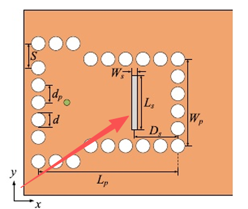
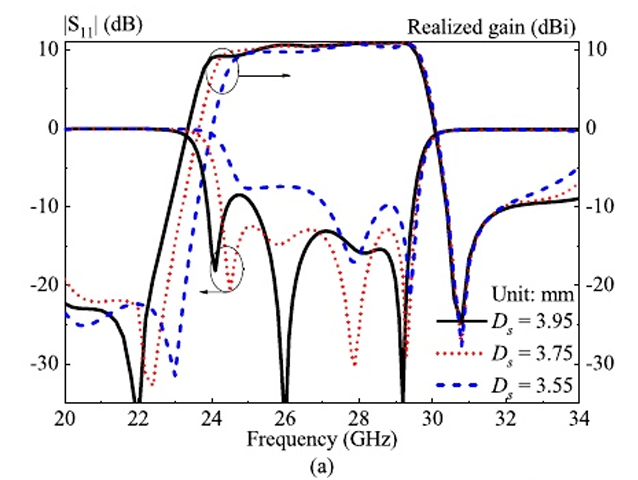
由上图所示，改变背腔缝隙的位置Ds，低频的辐射零点向右上移动，高频的辐射零点则几乎没有反应。
不同的是，如图7(b)所示，
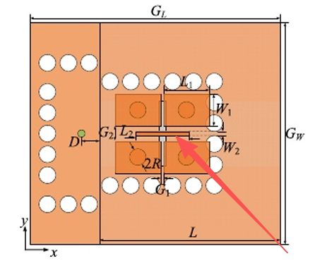
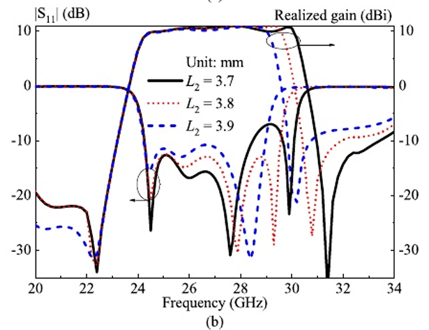
随着条带长度L2 的增加，下辐射零几乎保持不变，而上辐射零则逐渐向下移 动。辐射零点的独立可控特性极大地促进了所提出滤波天线 的设计。
知识点补充
谐振点产生的本质
所有谐振点的本质，都是电磁波在结构内形成了稳定的驻波，而驻波形成的唯一核心条件是：结构尺寸刚好等于「介质中半波长的整数倍」。
电磁波遇到理想金属壁（电壁）会发生全反射，且电场的切向分量会发生180° 相位反转（半波损失）。当电磁波在两个平行金属壁之间来回反射时：
- 入射波 + 反射波 会发生叠加；
- 当两个金属壁的距离 L，刚好满足
L = n·λg/2（n=1,2,3…，λg 是介质中的导波波长）时，来回反射的电磁波会形成振幅固定、不随时间移动的稳定驻波； - 驻波最强的频点，就是谐振点—— 此时电磁能量被牢牢束缚在结构内，形成谐振，对外表现为 S11 出现一个深谷，天线产生高效辐射。
两个波长的区别（90% 的人仿真算错尺寸的根源）
| 波长类型 | 公式 | 适用场景 |
|---|---|---|
| 自由空间波长 λ₀ | λ₀ = c/f（c=3e8m/s，f 是频率） | 电磁波在真空中传播，仅用于远场、空气盒子计算 |
| 介质导波波长 λg | λg = λ₀/√εeff（εeff 是有效介电常数） | 电磁波在 PCB 基板、SIW 腔、贴片内传播，谐振、模式计算必须用这个 |
举个例子：用的 Rogers 5880 基板 εr=2.2，中心频率 26.85GHz 时：
λ₀≈11.17mm，λ₀/2≈5.58mm；
λg≈11.17/√2.2≈7.53mm，λg/2≈3.76mm；
你的天线所有谐振结构的尺寸，都是围绕这个介质半波长 λg/2设计的，绝对不能用自由空间半波长计算。
TE/TM 模式到底是什么？下标数字的含义
模式，本质是用来描述谐振 / 传输时，电磁波的电场、磁场在空间中的分布规律，下标数字就是「各个方向上的半波数量」。
- TE 模 vs TM 模 核心定义
以电磁波的传播 / 谐振方向为基准，把空间分为「横向（垂直于传播方向）」和「纵向（沿传播方向）」：
| 模式类型 | 全称 | 核心特征 | 别称 | 你的论文里的对应结构 |
|---|---|---|---|---|
| TE 模 | 横电波 | 电场只有横向分量，纵向无电场分量；磁场有纵向分量 | H 模 | SIW 谐振腔的 TE110、TE210 模 |
| TM 模 | 横磁波 | 磁场只有横向分量，纵向无磁场分量；电场有纵向分量 | E 模 | 矩形贴片的 TM01 模 |
- 下标数字的真正含义（分两种场景，别搞混！）
场景 1：无限长传输波导（仅传信号，无谐振，2 个下标 TEmn/TMmn）
比如用来传输毫米波信号的矩形金属波导，波沿 z 轴无限长传播，只有 x、y 两个方向有金属边界，因此模式只有 2 个下标：
m：电场（TE 模）/ 磁场（TM 模）在**波导宽边 a（x 方向）**上的**半波数量**；
n：电场（TE 模）/ 磁场（TM 模）在**波导窄边 b（y 方向）**上的**半波数量**。
最经典的 TE10 模（矩形波导主模）：TE10 模：m=1，n=0
含义：x 方向（宽边 a）有1 个半波长的电场分布，y 方向（窄边 b）电场均匀无变化（n=0）；
边界条件验证：x=0 和 x=a 是金属壁，电场切向分量必须为 0，因此 x=0 和 x=a 处电场 = 0，x=a/2 处电场最强，刚好是 1 个完整的半正弦波（1 个半波），完美匹配 m=1；
半波长对应：宽边 a=λg/2，因此 λg=2a，这就是 TE10 模的截止条件，只有工作波长 λ<2a 时，波才能在波导里传播。
场景 2：矩形谐振腔（你的 SIW 腔就是这个！3 个下标 TEmnp/TMmnp）
把无限长波导的 z 方向两端也用金属壁封起来，形成一个封闭的金属盒子，就是谐振腔。此时 x、y、z 三个方向都有金属边界，因此模式多了第 3 个下标，格式为TEmnp / TMmnp：
m：场量在 x 方向（腔宽 a） 上的半波数量；
n：场量在 y 方向（腔深 b） 上的半波数量；
p：场量在 z 方向（腔长 l） 上的半波数量。
该贴片四个谐振点的由来
- 第一个谐振点：24.5GHz（仿真）/24.6GHz（实测）
产生结构：阶梯 SIW 腔的右半部分
对应模式：TE110 模
半波长逻辑：
m=1 → x 方向腔宽对应 1 个半波长（λg/2）；
n=1 → y 方向腔深对应 1 个半波长（λg/2）；
p=0 → z 方向场均匀无变化；
腔的尺寸刚好满足 x、y 方向的半波长驻波条件，电场在 SIW 腔的金属壁上满足切向为 0 的边界条件，形成稳定驻波，产生谐振。
- 第二个谐振点：25.8GHz（仿真）/25.7GHz（实测）
产生结构：阶梯 SIW 腔的左半部分
对应模式：摄动 TE210 模
半波长逻辑：
m=2 → x 方向腔宽对应2 个半波长（也就是 1 个完整波长）；
n=1 → y 方向腔深对应 1 个半波长（λg/2）；
p=0 → z 方向场均匀无变化；
原本的 TE210 模谐振频率更高，论文里通过偏移的耦合槽扰动了腔体内的场分布，把这个模式的谐振频率拉到了通带内，和 TE110 模相邻，拓展了带宽。
- 第三个谐振点：28.0GHz（仿真）/28.1GHz（实测）
产生结构：4 个带短路通孔的矩形贴片
对应模式：TM01 模（微带贴片主模）
半波长逻辑：
矩形贴片本质是一个半波长谐振器，贴片的长度 L1=3.3mm，刚好等于 28GHz 下介质中的半波长 λg/2；
TM01 模的含义：贴片的宽度方向半波数为 0，长度方向半波数为 1，电场在贴片的两个长边（开路辐射边）处最强，中心短路通孔处为 0，形成稳定驻波，产生谐振；
短路通孔的作用：让 SIW 腔上壁的强电流直接流入贴片，大幅增强了贴片的激励强度，让这个谐振模式更稳定。
- 第四个谐振点：29.4GHz（仿真）/29.0GHz（实测）
产生结构：中间的寄生带
对应模式：半波长微带线谐振模
半波长逻辑：
寄生带本质是一个两端开路的半波长谐振器，它的长度 L2=3.8mm，刚好等于 29GHz 下介质中的半波长 λg/2；
电磁波在寄生带的两个开路端来回反射，形成稳定驻波，满足半波长谐振条件，产生第四个谐振点，把通带的高频边界进一步拓宽。